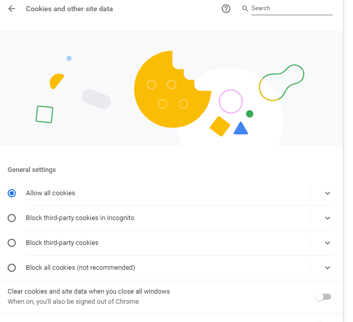
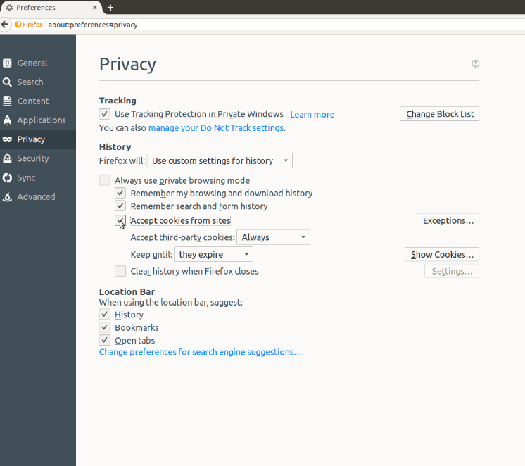
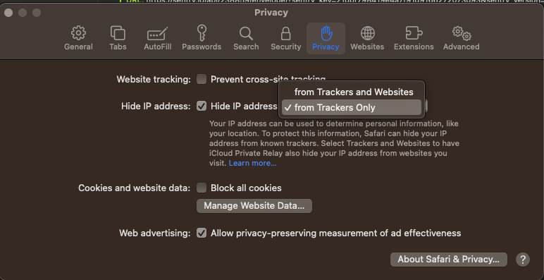

Cookies, Firewalls, Browser support¶
Cookie Requirements¶
In order for Codio to work correctly you need to allow cookies. Check our Privacy policy for more information about cookies.
The following information explains how to enable cookies for all sites. You can also enable them only for certain sites, which is not explained below.
To enable cookies in Chrome:¶
In your browser enter: chrome://settings/cookies and
enable Allow all cookies
disable Block third party cookies

Image from Chrome Version 113.0.5672.64 (Official Build) (64-bit)
To enable cookies in Firefox:¶
In your browser enter: about:preferences#privacy Select User custom settings for history from the drop down in the History section and
check Accept cookies from sites
select ‘Always’ in the drop down for Accept third-party cookies

Image from Firefox 55.0.2 (64-bit)
To enable cookies in Safari:¶
In your browser go to Safari> Preferences
Select the Privacy tab and ensure check Block all cookies, Prevent cross-site tracking are not checked and if you are electing to Hide IP address do not check from Trackers and Websites

If using an earlier version of Safari, check Always Allow in the Cookies and website data section
Image from Safari Version 16.5.1 (18615.2.9.11.7) on macOS Ventura Version 13.4.1
Firewall and network settings¶
Codio can usually run from anywhere in your browser without any special settings. However, some k12 or university firewall settings may require special configuration.
This page contains information for
Network system administrators
Students and teachers who may be using Codio from home
Firewall settings¶
The following is a list of ports and URLs that Codio accesses from time to time. We have put these in priority order.
*.codio.com the main Codio site and application
*.codio.io domains that are auto-generated for each user project
api.keen.io statistics gathering to measure student time spent in units (stats)
*.typekit.net web fonts
fonts.gstatic.com web fonts
fast.fonts.net web fonts
*.cloudfront.net our CDN for speeding up static content
*.youtube.com & *.vimeo.com for video’s included in Course content
gravatar.com used for user gravatars (pictures)
*.intercom.io, cdnjs.cloudflare.com and *.pubnub.com are highly recommended as they relate to the help and support application (Intercom) built into Codio.
If your institution blocks access to YouTube as a general rule, your IT department can whitelist YouTube access that only allows access to content from registered and accredited educational content repositories. See here for more information on this.
Working from home¶
Sometimes the anti-virus/firewall settings on your personal devices may interfere with home usage and make the experience slow.
You should check your settings and ensure that items in the above Firewall settings list are added to your exclusion list.
Connectivity Test¶
If you continue to experience difficulties, visit the Connection Diagnostics page and send us back the generated output going to Help > Support/Contact Us and attach the output file using the paperclip icon
Browser support¶
Codio supports most browsers but best experienced on the latest versions of the following browsers:
Chrome
Firefox
Edge
Safari
if using Safari be aware that it can block preview cookies with their ‘Intelligent Tracking Prevention 2.0’ and cause assignments not to load.
If using Safari and accessing Codio via an LMS (Canvas/Blackboard/D2L/Moodle etc), disable “Prevent cross-site tracking” to ensure access.
If you are experiencing any issue where Codio will not run as it should, please send an email to help@codio.com.
Disable IE Compatibility View¶
It could happen that even if you have Internet Explorer 10 or a later version, we detect an older version of the browser.
This is due to the Compatibility Mode of the Browser which enables old features we no longer support.
To disable this option, please go to *Tools → F12 developer tools* and be sure that in Browser Mode is selected «Internet Explorer 10» and in Document Mode is selected «Standards (Page default)».